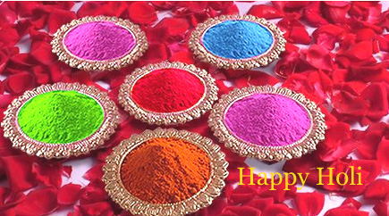

Holi

Holi - the festival of colors is one of the most popular festivals of the country. It is celebrated during the Spring season and embodies all the festivity, liveliness and exuberance of the season. Holi is the festival of young hearts. Spraying colors, dancing on traditional Holi songs, rhythmic drum beats and wild processions are the common scenes that one comes across during this festival. The festival is associated with various legends but the most popular among them is the tale of Hollika. According to legends there was a demon-king named Hiranyakashipu who was very cruel and ordered everybody to worship him and not God. He was against Lord Vishnu. However, his little son Prahlad refused to do so and continued to worship the almighty Lord Vishnu, the Hindu God. He tried hard to kill him but every time Lord Vishnu saved him. One of the sisters of the king named Holika had a boon to remain unscathed by fire, so she followed her brother's wishes. However, with this sinful act against Lord Narayana's devotee, Holika's boon ended and she was burnt to ashes, while Prahlad came out safe. From that day onwards Holi is celebrated as the festival of the victory of good over evil. Even today, bonfires are lit on the night before Holi in memory of the event and burning of the evil Holika. It symbolizes the victory of Good over evil.
It is actually the great festival of Hindus, where farmers and rural people can celebrate the prosperity and abundance in life that comes with the harvest season. The festival of colors, Holi is celebrated on the day after the full moon in early March or April every year. People smear each other's faces with colored powder known as 'Gulal' and 'Abeer' and throw colored water or 'Rang' on each other. Most of the people now-a-days prefer the traditionally prepared natural herbal colors that are not only fragrant but also good for skin. People take out processions on streets that feature folk songs and dances. The 'Bhaang' (opium) drinks are very popular among people as it the favorite festival drink. The festival of Holi has no religion as all celebrates it. The festival has a secular flavor. The main significance behind the celebration is fun and enjoyment.